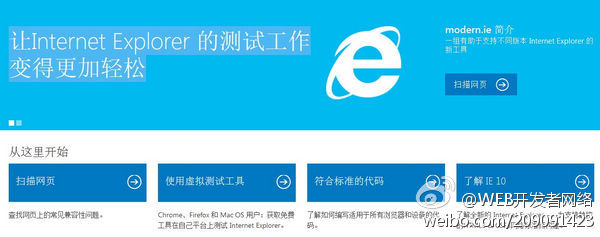

回复@闲饮东窗月:一般都有哪些媒体会剽窃CSDN博客呢？我们代为维权！ //@闲饮东窗月:体会到广大CSDN博客作者被剽窃的心境了吧 //@Ada李力:又曝光一个无下限的。 //@CSDN李涛: //@CSDN魏兵: 来源链接都舍不得加。。。鄙视之！@Web开发者社区:【微软modern.IE：网站兼容性测试利器】面对浏览器生态不断加快的技术步伐，开发者很难确定自己的网页能否在浏览器上完美兼容。为了解决这一类问题，微软推出了一套免费的浏览器测试工具——旨在简化开发者的网页测试工作，提升网页优化效率，让开发者将精力放在创新上。=> 网页链接 